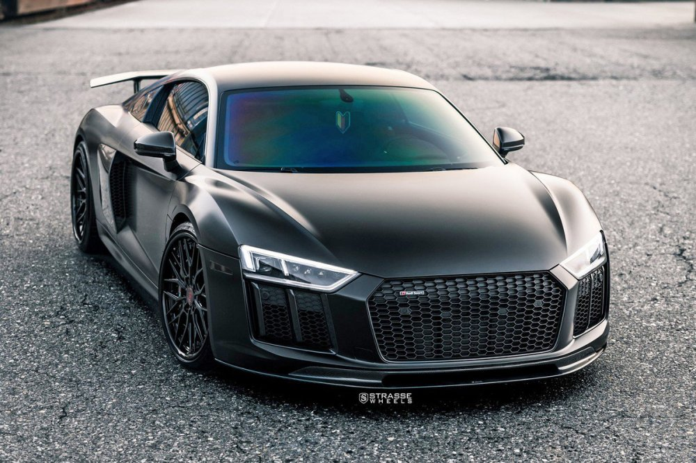

Descubre el Audi R8
El Audi R8, que cesó su producción en marzo de 2024, es un icónico superdeportivo de motor central V10 atmosférico (5.2 L, 570-620 CV) y tracción quattro o trasera (RWD), reconocido por su diseño agresivo y rendimiento superior, compartiendo chasis con el Lamborghini Huracán. Con dos generaciones, ha destacado por ser un deportivo de alto desempeño usable a diario.
